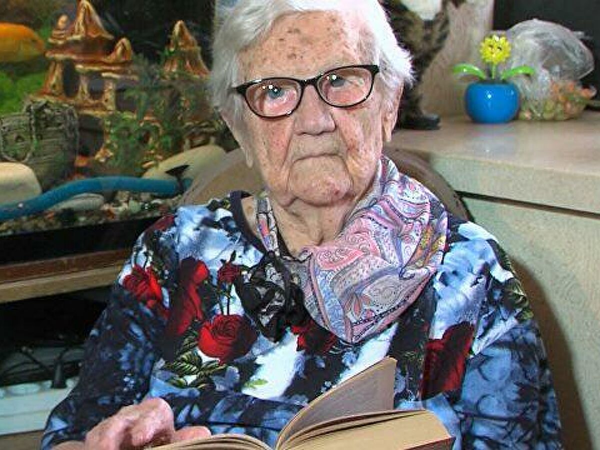
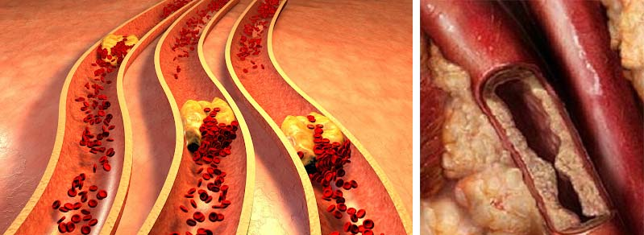

Chci žít ve věku 150 let! Slavná Česká dlouhověká páni nám prozradila, jak si prodlužuje život
Anna Pušmanová se narodila v roce 1896, přežila první republiku, dvě světové války, revoluce. V České knize rekordů je uvedena jako nejstarší žijící osoba na světě - 14. března její babička oslavila 120 narozeniny.
Anna přežila nejen své vrstevníky, ale také i dětí svých vrstevníků.
Babička a dokonce i prababička pravidelně podstupují lékařské prohlídce. Lékaři říkají každý rok totéž: Jste úplně zdravý, alespoň zítra posílám do vesmíru.
Navzdory tak dlouhému životu Anna Pušmanová málo kdy opouštěla svou vesnici a pořád odmítala navrhy svých děti přestěhovat se do města. Přesto, děti si myslely, že když je v starším věku, tak se musí přestěhovát blíž ke městu. Ale věk je pro babičku jen číslo.
Anna Pušmanová žije ve velkém dřevěném domě, který postavil její zesnulý manžel. Stará žena hlídá dům. Kromě ní má také zahradu - 10 hektarů, kterou každý rok zpracovává. A Anna se také stará o svoje zvířata: krávu, několik koz a slepici. A stará žena má dost síly na všechno.
Přišli jsme k její stému výročí, abychom mohly mít s ní rozhovor, a zjistili jsme její hlavní tajemství - jak žít tak dlouho a být vždy zdravá. Už sedí u stolu s koláčky, chápeme, že Anna má kromě nás spoustu starostí. Nechceme, jí zdržovat na dlouhou dobu a otravovat jí s našimi dotazy, a proto jsme okamžitě přistoupili k tomu, proč jsme příšli.
- Pani Pušmanová, žila jste tak dlouhý život. Mnohem déle než kdokoli jiný. Jak se Vám to povedlo?
- Ano, opakují všem, kteří se ptají na tuto otázku (novináři pravidelně mě navštěvují na moje narozeniny). Je to všechno o čistých cévach. Byl to Honza, který mě učil před válkou. Honza žil v naší vesnici, a byl bylinkář. Celá vesnice k němu chodila pro léčivé bylinky. Chodily i z vedlejších vesnic. Ale pak ho vzali na vojnu, aby léčil vojáky, a tak se nevrátil. Tehdy jsme byli sousedi,
Večer jsme s Honzou vždy seděli spolu na kopci. Vždy jsme dlouho mluvili. Radil mě, co a jak se léčí. Moje segra, tehdy měla zdravotní problémy. Rodiče léčily její cévy a zdravi segry se zlepšilo. Od té doby jsme věřili, že krevní cévy jsou hlavní věcí, na kterou je třeba dát pozor. Od té doby sledujeme celou rodinu. Rodiče však tragicky zemřeli v roce 87. Moje sestra také dlouho žila, ale méně než já. Zemřela v 95 letech. „Také jsem svým dětem vždy řikala, že je nutné dbát na stav cév.
A proto, je tajemství dlouhověkosti v zdravých cévach, které je nutné je čas od času čistit. Ale nikdo to nedělá, a proto žijou málo. To platí zejména pro důchodce ve měsě. Rádi pijou různé léky a myslejí si, že jim to pomuže. Když jsem byla ve městě se svou vnučkou, to mě velmi překvapilo. Všichni pacienti jsou již od 60 let. Hezky to zobrazuje, jak jim pomáhají jejich prášky. Sama chemie. Ale kdyby si vyčistily svoje cévy, byly by zdravé a aktivní jako já.
- paní Pušmanová, taže tvrdíte, že pokud člověk má špatne zdraví a začne si čistit krevní cévy, bude žít déle?
Samozřejmě! Ale jak jinak? No, divejte se. Krev která protéká cévami, je výživou pro všechny orgány. Čím lepší výživa, tím jsou orgány zdravější. Lidské zdraví je zdravím cév. Ale cévy se časem znečišťují. Koneckonců, i krev může mít různé druhy špatných látek, které se nevstřebavají. Cévy se nakonec znečišťují. Krev přestává proudit do vnitřních orgánů. Výsledkem je, že jsou nemocní, protože nejsou dost nasycení. Ledviny, žaludek, játra nebo močový měchýř - všechno trpí kvůli špatnému toku krve. Dokonce i hlava!
A pokud dojde ke zlepšení krevního toku, orgány v těle si budou cítit lépe. Možná že člověk nebude žít tak dlouho jako já, ale určitě bude žít déle. Žívot se může prodloužit o 3, 5 a možná dokonce i o 10 let. Několik lét zpátky žádné prášky nebyly a všechny byly zdravé.
A teď jsem si vzpomněla na jeden příběh. Psala mi jedna žena z Budapešti. Její manžel trpěl hroznou hypertenzí. Několik krát byl před infarktem. Doktoři říkali, že nebude žít dlouho. Doporučoval už si zaplatit místo na hřbitově. Ptala mě, co s tou nemoci manžela má dělát? Doufala, že vím, nějaké tajemství. Doporučila jsem mu, vyčistit si cévy. Nevím o žádných dalších tajemstvích. Od té doby uplynulo více než 10 let. Muž je živý, zdravý a nyní nemá žádnou hypertenzi. Už poté si začali čistit cévy celou rodinou. A od tý doby vždy na moje narozeniny přejou vše nejlepší. Na štěsti akových příběhu je hodně.
Novináři se mě na to často ptali, vždycky jsem jim to říkala. Ale očividně mě nikdo neposlouchá. Řikam to všechno marně! Když budete mít čiste cévy, můžete žít dlouho a co je nejdůležitější, že jsou zdraví! Nakonec, žít a dlouho trpět nemocí není dost příjemné.

Podle Světové zdravotnické organizace (WHO) způsobuje vaskulární znečištění až 93% vývoji různých onemocnění: od onemocnění gastrointestinálního traktu po špatný zrak
- A jak čistíte cévy Vy? Samostatně? Mohla byste nám a našimi čtenářiům prozradit recept?
Čistila jsem to samostatně. Speciálně jsem připravovala bylinkový vývar. Měla jsem lepší fyzickou formu. Chodila jsem do lesů a polí ve spravný čas, sušila jsem bylinky a poté to všechno vařila. Čistila jsem cévy každé 2 roky. Častěji ne. Protože se cévy tak rychle neucpají. Ale teď si sáma už to určitě neudělám. Je nutné jít do lesa, jen do určitých časti a v určitou dobu. To je hodně náročné pro tak starou babičku jako jsem já.
Přestala jsem to dělat před 15 léty. Moje nejstarší dcera žije v Německu. Objednává mi lék, který dostávám poštou. Teď čistím cévy pomoci toho léku. Moje pošťačka Alena, vždy ho doručí domů. Tento lék pomáhá ještě lépe než byliny které jsem sbírala, a má to stejné složení. Ano, a jak víte, nemám jíž žádné síly na sbírání bylinek. I když jsem zdravá, stejně jsem už stará na to. Stáří můžete zpomalit, ale nejde ho zastavit.
- Jak se jmenuje tento lék?
- Jejda, já si to ani nepamatuju. Pamatují jen barvu obalu. Je červený. Ale už jsem to vyhodila. A jak se říká, je lepší se zeptat moji dceru. Dám Vám na ní telefon a můžete jí zavolát. Je pravda, že žije v Německu, pravděpodobně hovor bude stát hodně peněz ...
Pani Pušmanová dlouho hledá něco ve vedlejší místnosti. A pak přinese velmi starý zápisnik - stará žena píše telefonní čísla svým staromódním způsobem.
Rozhodli jsme se ihned zavolat její dceře do Německa a zeptat se na název léku. Dcera řekla, že opravdu posílá mamiňce lék, a přípravek je německ. A přípravek se nazývá .
Rozhodli jsme se zjistit o tomto léku a obecně o postupu samostatného čištění cév, a o tom jak je to užitečné, u doktora. Dr.Jan Stanzel, přední kardiolog, vedoucí lékař kardiologického rehabilitačního centra v Balatonfüredu souhlasil se odpovědět na naše otázky
- Pane Stanzle, prosím, prozraďte nám, je to opravdu užitečný lék na cévy?
Postupem času stále více lékařů dochází k závěru, že se jedná o skutečně velmi užitečný lék, který může nejen prodloužit délku života, ale také zlepšit Vaše zdraví. Dnes, pro, abyste třeba vyléčili onemocnění (například ledvin) anebo játer) často tu léčbu musíte doplnit terapií i pro cévy, protože krevní cévy ucpané cholesterolem dopadají na Vaše zdraví velmi špatně! A už nemluvím o těch pacientech, kteří mají kardiovaskulární onemocnění nebo například hypertenzi pro tyto lidí je závazné brát lék na vyčištěbi cév.
- Tento lék obsahuje zvláštní formu vitamínu E, nazývanou alfa-tokoferol. Tato látka je schopna proniknout do molekul cholesterolu a zničit je zevnitř. V důsledku užívání léku jsou stěny cév úplně vyčištěny od cholesterolu. V 96% případů po očištění krevních cév se pacient vrátí k normálnímu tlaku.
Chci vám ukázat statistiku užívání drogy běžnými pacienty na naší klinice. Výsledky léčby pečlivě zaznamenáváme. Celkem jsme ošetřili asi 10 000 pacientů. Zde jsou jejich výsledky:
- Tlak se zcela stabilizoval (hypertenze jíž pacienta netrápí) - 98% respondentů
- Stabilizace srdeční frekvence - 97% respondentů
- Bolesti hlavy zmizely - 99% respondentů
- Zlepšeni zraku - 74% respondentů
- Účinnost léčby chronických onemocnění se zvýšila - 92%
- Významné zlepšení zdraví celkově - 99% respondentů
Jak vidíte, výsledky jsou prostě vynikající. To však není překvapivé.
Přípravek sám byl vyvinut předním německým výzkumným institutem - Institutem pro klinickou kardiologii. Kromě alfa-tokoferolu obsahuje přes 50 vitamínů, makro a mikroprvků užitečných pro srdce a cévy. Některé z nich uvedu,
- Vitamin C - Posiluje a tónizuje stěny krevních cév. Snižuje pravděpodobnost rozvoje aterosklerózy a hypertenzne krize.
- Vitamin A - Normalizuje propustnost malých kapilár.
- Vitaminy B1 - Posiluje srdeční sval. Zabraňuje infarktu.
- Vitamin B2 - Zvyšuje množství buněk kyslíku v krvi.
- Vitamin B3 - Rozšiřuje krevní cévy, snižuje krevní tlak ihned po podání.
- Vitamin B12 - zlepšuje koagulaci krve.
- Draslík - Odstraňuje přebytečnou tekutinu z těla.
- Sodium - Snižuje otoky, které se často vyskytují u pacientů s hypertenzí.
- Phosphorus - Zvyšuje cévní tonus, stabilizuje nervový systém.
- Vápník - Snižuje pravděpodobnost vzniku hypertenzní krize a mrtvice.
- Dcera pani Pušmanové řekla, že objednávala doručeně. Opravdu to jde tak objednat?
- Ano, to je pravda. Pokud vím, lék distribuuje Výzkumný ústav klinické kardiologie. Každá osoba žijící v Německu a České Republice si může objednat lék ve slevě. K objednání léku nepotřebujete žádné certifikátý - stačí o lék požádat na speciální webové stránce. se dodává po celé zemi, zcela zdarma.
Doporučuji to každému, kdo chce vyčistit cévy. Jejich životní úroveň a zdraví obecně po užíváti tohoto přípravku zlepší.
Ale, drobné varování, že letos ministerstvo zdravotnictví Německa nepřidalo potřebné prostředky k pokračování v programu zlepšování životní úrovně a zdravi populace, který byl zahájen až v roce . Říkají, že nejsou peníze. Takže nyní distribuují jen zbytek , který byl zakoupen v minulem roce. A rychle to končí. Proto každému, kdo chce pomocí tohoto přípravku vyčistit cévy, doporučují, abyste si ji objednali ten lék co nejdříve, do vyprodání zásob.
Pozor!
Vzhledem k velkému počtu objednávek musíme omezit dobu slevové propagační kampaně! Lék si můžete objednát jen do . Do konce kampaně bude původní produkt "" si mohou prostřednictvím oficiálního webu objednat všichni uživatelé s 50% slevou!
Zuzana Adamková
Velice vám děkuji za zajímavý článek. jsem si už objednala.
před hodinou
Kamila Bartaková
Vynikající přípravek. Souhlasím 100%. Předtím než jsem žačala ho používát, všechno mi bolelo - jedno, pak druhé. Začala jsem čistit své cévy mnoho bolestí mi přestalo obtěžovat. Radím všem!
před hodinou
Šarka Janousková
Ten lék mi také pomohl vylepšit cévy. Byla jsem poučena známým kardiologem jak léčit hypertenze. Je mi 63 let. Můj tlak stoupá od 53 let. V poslední době kolísání mého tlaku staly obzvláště silnými a častými. O tomto programu jsem dozvěděla od lékaře (mého znamého z dětství) a doporučil předepište lék před 3 měsíci. Teď je vše pod kontrolou a v normě. Lék je zázrčný.
před hodinou
Petr Tesárek
Také mi ten přípravek dost pomohl. Jsem zkušený hypertonik - tato nemoc mě trápí jíž 7 let. Byl jsem připraven brát léky celý život, ale nakonec po užívání tohoto léku tlak přestal zcela stoupat. Přípravek doporučuji všem určitě – to pomůže!
před hodinou
Zuzana Řeháková
Děkuji babičce za to, že tady to všechno nám prozradila.
před hodinou
Vladimir Bauman
Děkuji. Velmi zajímavé. Nechal jsem žádost. Slíbili mě, že lék mohu obdržet poštou do 5 dnů. Doufám že to tak bude.
před hodinou
Gabriela Kadava
Moc se mi líbil tento přípravek Léčil jsem se jím celé loňské léto. Hypertenze byla pryč! Také žádné příznaky a tlakové rázy. Jsem velmi překvapen. Cítím si skvělé.
před 27 minutami
Miroslav Wagner
Objednal jsem si to na uvedeném webu . Hypertenzi jsem sdědil, mám jí jíž třetího stupně. Neustále jsem brál léky na tlak. Tlak pod 180/110 jen zřídka klesal. Nyní tlak se mi zcela normalizoval . skutečná spása!
před 1 hodinou